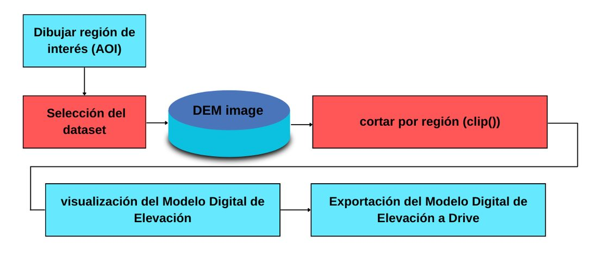
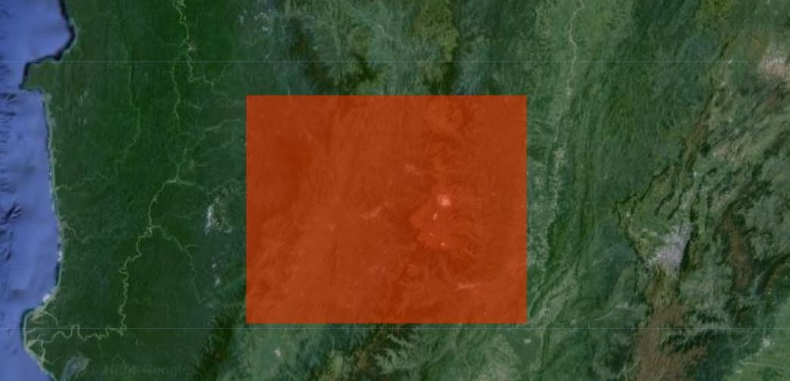
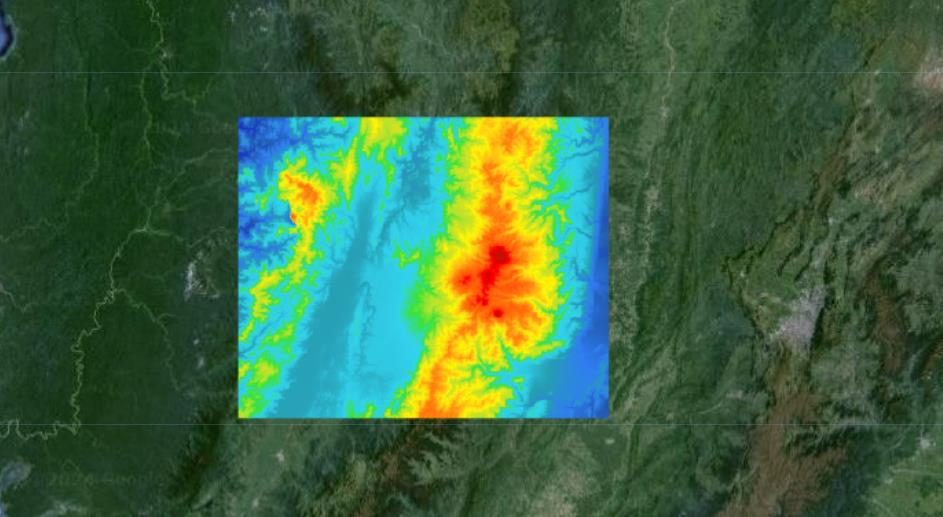

Descargar un DEM en Google Earth Engine
Aprende a descargar Modelos Digitales de Elevación (DEM) en Google Earth Engine en 5 minutos o menos: seleccionar, recortar, visualizar y exportar.
Introducción #
Los Modelos Digitales de Elevación (DEM) son conjuntos de datos que representan la elevación de la superficie terrestre. En Google Earth Engine se pueden consultar y descargar varios DEM de forma gratuita. Esta guía explica paso a paso cómo seleccionar, visualizar y exportar un DEM.
Objetivo #
Descargar modelos digitales de elevación con Google Earth Engine, con énfasis en la selección adecuada del DEM, su visualización en el mapa y su exportación a Google Drive en formato GeoTIFF.
Recursos #
El catálogo de Google Earth Engine ofrece varios DEM gratuitos, entre ellos estos.
¿Qué es un DEM? #
Un Modelo Digital de Elevación (DEM) es un raster en el que cada píxel guarda la altura del terreno sobre el nivel del mar, normalmente en metros. Es la base de muchos análisis, como el cálculo de pendientes, la delimitación de cuencas, los perfiles topográficos o los modelos 3D.
- Un DSM (modelo digital de superficie) incluye todo lo que hay sobre el suelo, como árboles y edificios. ALOS AW3D30 es un DSM.
- Un DTM (modelo digital del terreno) representa solo el suelo desnudo.
- La resolución espacial es el tamaño del píxel. Cuanto más pequeño, más detalle, aunque también archivos más pesados.
DEM disponibles en Earth Engine #
| Dataset | Resolución aproximada | Observaciones |
|---|---|---|
| ALOS AW3D30 | 30 m | Modelo de superficie de JAXA. Es el que usamos en este tutorial. |
| SRTM | 30 m | Misión de la NASA del año 2000, entre 60° N y 56° S. |
| NASADEM | 30 m | Versión reprocesada y mejorada de SRTM. |
| WWF HydroSHEDS | 90 m | Condicionado para análisis hidrológicos. |
| ASTER GED | 100 m | Incluye una banda de elevación además de emisividad. |
| GTOPO30 | 1 km | Cobertura global para estudios regionales. |
| ETOPO1 | 1,8 km | Incluye la batimetría del fondo oceánico. |
Para estudios locales te conviene un DEM de 30 m. Para un continente o el planeta, uno de baja resolución es más liviano y suficiente.
Proceso #
Este es el flujo de trabajo que vamos a seguir.

Paso 1: Dibujar la región de interés #
Dibuja la región de interés (AOI) con las herramientas de geometría del Code Editor.

Antes de ejecutar el código, dibuja tu zona de estudio con las herramientas de geometría del mapa y cámbiale el nombre a AOI en el panel de importaciones, porque así la llama el script.
Paso 2: Seleccionar el DEM #
Selecciona uno de los DEM disponibles en Earth Engine. En este caso usamos el dataset de la misión ALOS de JAXA, con una resolución espacial de 30 metros.
var DEM = ee.Image('JAXA/ALOS/AW3D30_V1_1').select(['AVE'], ['elevation']);
Paso 3: Recortar con la región de interés #
Recorta el DEM con el AOI para limitar el área de trabajo, usando el método .clip().
var dem_clip = DEM.clip(AOI);
Paso 4: Visualizar el DEM #
Visualiza el DEM recortado con una paleta de colores que resalta la elevación y agrégalo al mapa con Map.addLayer().
// Generación de la paleta de visualización var vis_dem = {min: 0, max: 5000, palette: [ '0602ff', '235cb1', '307ef3', '269db1', '30c8e2', '32d3ef', '3ae237', 'b5e22e', 'd6e21f', 'fff705', 'ffd611', 'ffb613', 'ff8b13', 'ff6e08', 'ff500d', 'ff0000', 'de0101', 'c21301' ]}; // Añadir el DEM al mapa con los parámetros de visualización Map.addLayer(dem_clip, vis_dem, "DEM CLIPPED"); Map.centerObject(AOI, 8);

Paso 5: Exportar el DEM a Google Drive #
Exporta el DEM a Google Drive en formato GeoTIFF con Export.image.toDrive(), indicando la resolución y las opciones de formato. Después ejecuta la tarea desde la pestaña Tasks.
Export.image.toDrive({ image: DEM, description: 'DEM', folder: "Digital Elevation Model", fileNamePrefix: 'DEM', scale: 30, region: AOI, fileFormat: 'GeoTIFF', formatOptions: { cloudOptimized: true } });
Gracias a region: AOI, el archivo exportado cubre solo tu región de interés. La opción cloudOptimized genera un GeoTIFF optimizado para la nube (COG).
Código completo #
Este es el script completo del tutorial. Cópialo, pégalo en el Code Editor y presiona Run. Luego ejecuta la exportación desde la pestaña Tasks.
// AOI: dibuja tu región de interés con las herramientas de geometría del mapa // y nómbrala "AOI" en el panel de importaciones. // Seleccionar el DEM (ALOS, 30 m) var DEM = ee.Image('JAXA/ALOS/AW3D30_V1_1').select(['AVE'], ['elevation']); // Recortar con la región de interés var dem_clip = DEM.clip(AOI); // Generación de la paleta de visualización var vis_dem = {min: 0, max: 5000, palette: [ '0602ff', '235cb1', '307ef3', '269db1', '30c8e2', '32d3ef', '3ae237', 'b5e22e', 'd6e21f', 'fff705', 'ffd611', 'ffb613', 'ff8b13', 'ff6e08', 'ff500d', 'ff0000', 'de0101', 'c21301' ]}; // Añadir el DEM al mapa con los parámetros de visualización Map.addLayer(dem_clip, vis_dem, "DEM CLIPPED"); Map.centerObject(AOI, 8); // Exportar el DEM a Google Drive Export.image.toDrive({ image: DEM, description: 'DEM', folder: "Digital Elevation Model", fileNamePrefix: 'DEM', scale: 30, region: AOI, fileFormat: 'GeoTIFF', formatOptions: { cloudOptimized: true } });
Conclusiones #
Descargar modelos digitales de elevación en Google Earth Engine es un proceso sencillo que consiste en seleccionar, visualizar y exportar el DEM que necesitas. Con estos pasos puedes obtener el DEM de tu zona de estudio para usarlo en otros programas SIG.